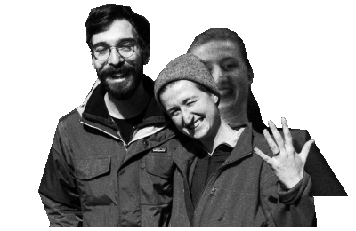

July 16th, 2022, at 4747 Pilothouse Road.
3:30PM –– Guests arrive
4:00PM –– Wedding ceremony
4:30PM –– Reception
5:30PM –– Dinner and speeches
7:00PM –– Cake cutting
7:30PM –– Dancing!
*Times subject to change. It's a wedding; things run late!
Can I bring my kid?
The wedding will be for adults only, please. We think your kids are great, but we also thought you’d appreciate a night off from being a parent.
What’s the dress code?
Cocktail attire. Since it will be mid-July, we are anticipating warm weather so please consider that when planning your outfit.
What’s the parking situation?
Parking is going to be limited, so we recommend ride-sharing or taking the bus. For those that will be driving or carpooling, please let us know ahead of time so we can ensure you have a spot to park, either at the nearby church or in a neighbour's driveway.
Is the wedding outside?
Assuming it’s a dry day, the ceremony will be held on the front lawn, with reception and dance being held inside and on the patio.
What happens if it rains?
If rain is in the forecast, we will be holding the wedding in an undercover area on the property. Everything will proceed as usual, so no need to worry about the rain.
Where’s the registry?
We do not have a registry. We are incredibly grateful to everyone who has volunteered to help out on the day! If you do wish to give in another way, we also greatly appreciate contributions towards our honeymoon fund.
What’s for dinner?
We are doing a backyard BBQ buffet with light appetizer platters during the reception, and burgers and sides for dinner.
Will there be a bar?
Yes, there will be! Beer, wine and non-alcoholic beverages will be served throughout the evening.
Where can I find the bathroom?
There will be two bathrooms available, one on the main floor and one in the downstairs area.
Can I take photos?
Yes, we’d love to see the photos you take! There will be a professional photographer on-site, but we will also have an AirDrop set up and will send a Dropbox link over after the wedding for you to share what you've captured.
Can I make a speech?
Definitely! If you would be able to contact us before the wedding day we will find a spot for you in the speech order, but we will also leave some time for an open mic in case you’re inspired on the day.
I haven’t RSVP’d yet, am I still invited?
Click here
if you would like more info.
Have another question we didn’t answer?
Email us at sofiaandjesse@gmail.com
That's everything, we're so excited to celebrate with you!

{kind=link}